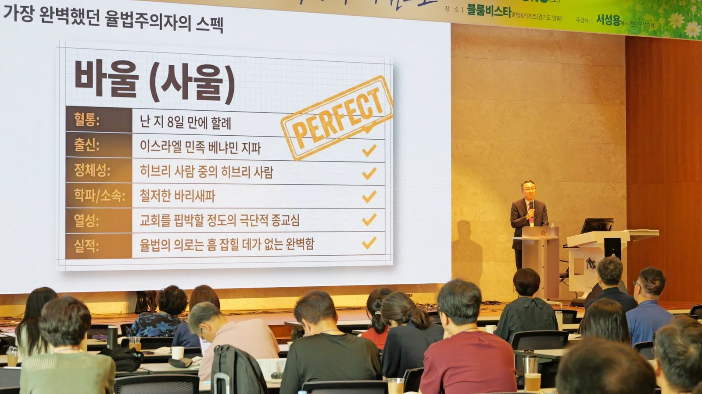

46회 CMF 학사수련회 말씀 3(토 오전) · 서성용 목사 · 본문 빌3 · 시리즈 「그리스도를 위한 특권」 셋째 강이자 수련회를 닫는 말씀

SECTION 01
개요·핵심 논지
copy
셋째 강은 직전 순서와의 즉석 공명으로 문을 연다. 전체특강 「CMF 정신」을 뒤에서 듣던 설교자가 "저분이 제 설교를 미리 듣고 오셨나 하는 생각을 할 정도"였다고 했다 — 가치는 지키되 방식은 시대에 따라 바꿔야 한다는 특강의 논지가, 자신이 준비한 「예수 대 율법」과 같은 자리를 짚고 있었기 때문이다. "율법보다 예수님이지 — 뻔히 답을 알고 있죠. 그런데 과연 우리의 신앙은 정말 그럴까."
내 신앙생활의 의로움이 남을 판단하는 기준이 되는 순간, 우리는 율법을 통해 다른 사람을 찌르는 바리새인이 됩니다.
과녁은 정확히 이 수련회의 청중이다. 누가들은 대개 교회의 중직자다 — 담임목사에게 가장 믿음직한 사람들. 그런데 중직자에게 함정이 있다: 나의 헌신과 열심이 누군가를 찌르는 무기가 되고 있지는 않은가. "내 신앙생활의 의로움이 남을 판단하는 기준이 되는 순간, 우리는 율법을 통해 다른 사람을 찌르는 바리새인이 됩니다." 바리새인은 2000년 전에 사라진 것이 아니라 지금도 교회 안에 있을 수 있다 — 이 진단에서 출발해, 율법과 율법주의를 가르고(버릴 것은 율법이 아니라 율법주의다), 율법의 두 기능(거울·초등교사)을 세우고, 율법의 삶과 복음의 삶의 작동 방식을 대비한 뒤, 세 가지 진단 질문으로 청중을 자기 점검의 자리에 세운다.
설교 슬라이드는 이 구조를 하나의 콘셉트로 감쌌다 — 표지의 파일명이 「임상 진단 보고서(Clinical Diagnostic Report) | File: PHIL-03」이고, 마지막 장은 "진단 및 처방 완료(Diagnosis & Prescription Complete)"로 닫힌다. 죄는 병, 율법은 처방전, 복음은 약이라는 설교의 의료 비유가 덱 전체의 디자인 언어가 된 것으로, 의료인 수련회를 위한 맞춤 설계다. 표지의 부제가 곧 설교의 한 문장 요약이다: "나의 헌신은 누군가를 찌르는 무기가 되고 있지 않은가?"
★ KEY INSIGHT
구조·전개
copy
| 단계 | 내용 | 도달점 |
|---|---|---|
| 도입 | 직전 특강과의 공명 — 가치/방식 ↔ 예수/율법 | "과연 우리의 신앙은 정말 그럴까" |
| 진단 ① | 중직자의 함정 — 바리새인의 그림자 | 헌신이 남을 찌르는 무기가 되고 있지 않은가 |
| 배경 | 빌립보 교회를 덮친 율법주의 바이러스 | 율법이 아니라 율법주의가 바이러스다 |
| 본문 ① | 3:2 "개들을 조심하십시오" — 바울의 저속한 표현 | 초대교회 최대의 공격은 율법주의자들이었다 |
| 본문 ② | 바울의 이력(8일 만의 할례·베냐민 지파·바리새파·흠 없음) | 가장 완벽했던 율법주의자가 그것을 "해로" 여겼다 |
| 구분 | 율법 ≠ 율법주의 — 예수님도 율법을 폐하러 오시지 않았다(마 5:17) | 버릴 것은 "율법으로 스스로 의로워질 수 있다는 교만과 착각" |
| 기능 | 율법의 두 기능: 진단하는 거울(롬 3:20) · 그리스도께로 이끄는 초등교사(갈 3:24) | 처방전은 병을 고치지 못한다 |
| 대비 | 율법의 삶(강제·두려움·비교·정죄) vs 복음의 삶(자발·감격·성령의 능력) | "율법주의는 강요, 복음은 감격으로 물들게 한다" |
| 적용 | 영적 상태 진단 3질문 · 강요가 아닌 감염 | "이렇게 해봐"가 아니라 "나는 이렇게 했더니 은혜가 있었어"까지 |
| 결론 | 빌 3:12 — 이미 얻은 것이 아니라 달려간다 | 율법주의자는 고정형, 바울은 진행형 |
SECTION 03
핵심 개념·주장 ↔ 근거
copy
SECTION 04
율법주의 바이러스 — 빌립보 교회의 상황
copy
빌립보는 유대인 열 명이 없어 회당조차 없던 도시였고, 자주 장수 루디아와 감옥 간수가 개척 멤버인 순전한 이방인 교회였다. 그런 교회에까지 예루살렘발 율법주의가 — 바울이 목숨 걸고 세운 교회들의 뒤를 따라 — "코로나 바이러스가 확산되듯" 들어왔다. 복음을 전하고 교회를 세우는 일은 그토록 어려운데, 그 교회를 흔드는 율법주의는 너무 쉽게 들어온다. 바울이 4장이 아닌 3장에서 "끝으로"를 꺼내는 것은 강조다 — 빌립보 교회의 여러 문제 중 지금 가장 심각하게 여기는 문제가 이것이라는 뜻. 그래서 3:2의 표현이 저토록 험하다 — "개들을 조심하십시오"(새번역). 당시의 저속한 저주다. 예수님은 더한 표현("독사")도 쓰셨다. 교회 안에서 열심히 봉사하고 사역하는 사람들("악한 일꾼들") 중에 율법주의자가 있었다는 뜻이기도 하다.
★ KEY INSIGHT
버릴 것은 율법이 아니라 율법주의
copy
바울은 먼저 자기 이력서를 꺼낸다 — 난 지 8일 만의 할례, 베냐민 지파, 히브리인 중의 히브리인, 바리새파, 교회를 핍박할 만큼의 열심, 율법의 의로는 흠이 없음. 자격 없는 사람이 율법을 비판하면 안 되기 때문이다. 그 완벽한 스펙의 소유자가 "무엇이든지 내게 유익하던 것을 그리스도 때문에 다 해로 여긴다"(3:7) — 율법적 행위가 복음을 받아들이는 데 방해물이 되었을 뿐이라는 것이다. 여기서 설교의 중심 구분이 선다: 율법은 폐기의 대상이 아니다. 예수님도 "율법을 폐하러 온 것이 아니라 완성하러 왔다"(마 5:17)고 하셨다. 바울이 버린 것은 율법이 아니라 율법주의 — 율법으로 스스로 의로워질 수 있다는 인간의 교만과 착각이다. 그렇다면 이 시대에도 성립한다: "나의 의로운 행위와 신앙의 열심, 교회와 CMF를 위해 헌신해 온 그 모든 것"이 잘못 놓이면 같은 교만이 되고, "내 방식, 내 신앙의 방식, 내가 해왔던 섬김의 방식만을 고집하다 보면 율법주의자가 될 수 있습니다."
율법주의가 어디까지 가는지는 현재형 일화로 보였다 — 텔아비브에서 유학한 후배 목사가 겪은 일: 안식일에 유대인 이웃이 찾아와 "네가 와서 퓨즈를 갈아달라"고 했다(이방인은 율법을 안 지켜도 되니까). 랍비들은 지금도 규례를 만드는데, "안식일에 두루마리 화장지를 쓰는 것은 일이고 티슈를 뽑아 쓰는 것은 일이 아니다"라는 결론까지 실제로 있다고 했다. 웃자고 한 이야기가 아니다 — 이런 율법을 지켜야만 의로운 백성이 된다고 믿는 것, 그리고 그 기준으로 남을 가르는 것이 율법주의의 폐해다.
SECTION 06
율법의 두 기능 — 거울과 초등교사, 그리고 처방전
copy
성경이 말하는 율법의 역할은 둘이다. 첫째, 진단하는 거울(롬 3:20) — 스스로 의롭다고 믿는 우리가 실은 철저히 죄인임을 깨닫게 한다. 거울은 얼굴에 묻은 것을 보고 닦아내라고 있는 것이다. 구약의 율법 조항들을 우리는 다 지킬 수 없고, 예수님도 바리새인들에게 "너희도 지키지 못하면서 왜 백성들에게 무거운 짐을 지우느냐"고 하셨다 — 그런데 우리에게도 그 마음이 있다. "나도 제대로 못하지만, 이렇게 해야 맞는 거야." 설교자는 자신부터 시인했다 — 이 말씀을 준비하며 묵상해 보니 후배 목회자들을 자기 경험과 기준으로 판단하는 마음이 자기 안에도 있더라는 것.
약을 먹고 생명을 얻었으면서도 여전히 종이 처방전만 붙들고 남들에게 자랑하는 어리석음에 빠져 있지는 않은지.
둘째, 그리스도께로 이끄는 초등교사(갈 3:24) — 스스로의 힘으로 구원받을 수 없음을 깨달은 인간을 유일한 구원자께로 안내하는 역할. 그리고 의료인 청중을 위한 비유가 이 둘을 하나로 묶는다: 죄는 죽을병에 걸린 상태, 율법은 병을 진단하고 약을 안내하는 처방전, 복음은 약이다. 처방전만으로는 병이 낫지 않는다 — 약을 먹어야 산다. "약을 먹고 생명을 얻었으면서도 여전히 종이 처방전만 붙들고 남들에게 자랑하는 어리석음에 빠져 있지는 않은지."
SECTION 07
율법의 삶 vs 복음의 삶 — 작동 방식의 차이
copy
율법은 강제와 명령이고 두려움을 낳는다. 설교자가 어린 시절 부흥회에서 들은 예화 — 천국 사다리에서 빠진 칸은 "네가 주일에 놀러 간 날"이라는 — 를 그는 "굉장히 심각하게" 들었고, 주일에 교회에 안 가면 지옥에 가는 줄 알았다고 했다. 지금도 두려워서 신앙생활을 하는 성도들이 있고, 효와 규범을 중시하는 유교 문화는 율법주의와 체질이 비슷해 이 경향을 강화한다. 반면 복음은 강제가 아니라 사랑에서 나오는 자발성이다 — 연애하는 사람이 약속에 늦지 않는 것은 누가 강제해서가 아니다. 은혜를 경험한 성도는 새벽에 나오라고 하지 않아도 나온다. 그리고 복음에는 제한이 없다 — 성령이 부어지면 내 능력을 뛰어넘는 일을 자발적으로 시도하게 된다(시간도 돈도 없었는데 제주까지 오게 됐다는 전날 캐나다 유학생의 간증이 그 자리에서 인용됐다).
부자 청년 이야기가 이 대비를 본문으로 봉인한다 — "율법을 다 지켰다"던 청년에게 예수님이 재산을 팔아 가난한 자들에게 주라고 하시자 근심하며 돌아갔다. 율법의 진짜 정신은 사랑의 실천(하나님 사랑·이웃 사랑, 대강령)인데, 그는 자기 나름대로 율법을 해석해 자기 의만 세웠을 뿐 율법을 지킨 것이 아니다. 슬라이드의 「진단 매트릭스」가 이 대비를 한 표로 요약한다:
| 율법에 의한 삶 | 복음에 의한 삶 | |
|---|---|---|
| 작동 동기 | 강제성 / 두려움 — 지키지 않으면 벌을 받는다 | 사랑 / 자발성 — 하나님을 사랑하므로 기쁘게 행한다 |
| 실행 능력 | 인간 행위의 철저한 한계 | 성령을 통한 완벽한 능력 부여 |
| 최종 결과 | 정죄와 교만 | 율법의 완성(하나님 사랑과 이웃 사랑) |
표 아래 놓인 본문이 로마서 3:31이다 — "우리가 믿음으로 율법을 파기하느냐? 그럴 수 없느니라. 도리어 율법을 굳게 세우느니라." 같은 논리가 「구원 계획의 타임라인」 세 단계로도 그려졌다: Phase 1 율법의 역할(진단) — 죄를 깨닫게 하고 구원의 절대적 필요를 인식시킴 → Phase 2 예수 그리스도의 완성(치료) — 인간 대신 율법의 요구를 다 이루시고 십자가와 부활로 완전한 의(義)를 주심 → Phase 3 복음 안에서의 삶(건강한 일상) — 성령을 통해 율법의 진짜 정신인 '사랑'을 실천함.
SECTION 08
영적 상태 진단 — 세 가지 질문과 "강요가 아닌 감염"
copy
설교의 절정은 청중을 향한 세 가지 진단 질문이다.
① 나의 긴 신앙 연조와 헌신이, 혹시 남을 찌르고 평가하는 날카로운 기준이 되고 있지는 않습니까? ② 하나님의 은혜로 시작한 섬김이, 어느새 내가 쌓아 올린 나의 의로 변질되어 있지는 않습니까? ③ 나는 지금 예수님의 치료약을 마시고 기뻐합니까 — 아니면 낡은 처방전을 흔들며 다른 사람을 정죄하고 있습니까?
율법주의는 강요지만, 복음은 감격으로 물들게 합니다.
내가 만든 의와 치열하게 쌓아 올린 헌신의 경험을 후배들과 가족에게 메우면 — "요즘 말로 꼰대라고 하죠" — 율법주의자가 될 수 있다. 예수님은 우리에게 무거운 짐을 지우신 것이 아니라 우리가 질 수 없는 죄의 짐을 대신 지셨다. 그래서 처방은 강요가 아닌 감염이다. 자기 교회 소그룹 나눔의 원칙을 소개했다 — "이렇게 해봐"는 강요라서 금지이고, 허용되는 것은 "나는 이렇게 했더니 이런 은혜가 있었어"까지다. 판단은 각자가 한다. "율법주의는 강요지만, 복음은 감격으로 물들게 합니다." CMF가 46년을 온 것도 후배들에게 감동과 감격을 준 선배들의 헌신이 있었기 때문이고, 앞으로도 그래야 한다 — 젊은 세대의 찬양이 우리와 장르가 다르다고 잘못된 것이 아니듯("오늘 특송, 저는 가르쳐줘도 못 따라 합니다 — 그런데 정말 잘해요"), 방식이 아니라 가치를 강조해야 한다. "오늘 아까 중요한 말씀 하셨어요 — 방식보다 가치를 계속해서 강조해야 될 것 같습니다."
슬라이드는 이 처방을 시니어 리더십의 언어로 한 번 더 그렸다 — 「공동체(CMF)를 위한 리더십의 처방전」 두 폭 그림. 왼쪽 The Yoke(멍에): "내가 만든 율법"이라 적힌 무거운 상자를 후배의 등에 지우는 사람 — "내가 치열하게 노력해서 쌓아온 헌신이 후배들과 지체들을 판단하는 '무거운 짐'이 되어서는 안 됩니다." 오른쪽 The Umbrella(우산): 비 오는 날 후배에게 '은혜의 우산'을 씌워 주는 사람 — "내가 공동체를 섬길 수 있었던 유일한 이유는 오직 '하나님의 은혜'였습니다. 나의 열심을 타인에게 강요하는 기준(율법)으로 삼지 마십시오."
결론은 빌 3:12다 — "얻었다 함도 아니요 이미 이루었다 함도 아니라, 그리스도 예수께서 나를 사로잡으셨으므로 나는 그것을 붙들려고 쫓아간다." 율법주의자의 특징은 고정이고("나는 이미 알고 있고 이 율법대로 살아야 돼"), 바울의 특징은 진행형이다("나는 아직 부족하다, 그래서 지금도 달려간다"). "내가 지금까지 잘해왔으니 앞으로도 이렇게만 하면 돼"가 아니라, 여기까지 온 것도 은혜고 앞으로도 주님이 이끄셔야 한다는 마음 — 그것이 율법주의에 빠지지 않는 길이다. 설교는 수련회 핸드북 1번 찬양 「함께 지어져 가네」와 자기 점검의 기도로 닫혔고, 그렇게 사흘의 말씀 시리즈가 끝났다. 슬라이드의 마지막 장은 빌 3:9("나는 율법에서 생기는 나 스스로의 의가 아니라, 믿음에 근거하여 하나님에게서 오는 의를 얻으려고 합니다")와 축복의 문장으로 닫힌다 — "예수님의 마음이 있는 곳에 당신의 마음이 있고, 예수님이 일하시는 곳에서 기쁨으로 일하는 당신의 모든 헌신을 축복합니다."
SECTION 09
종합
copy
시리즈의 설계가 완결되는 강이다. 말씀 1이 특권(고난)을, 말씀 2가 자기비움(케노시스)을 놓았다면, 말씀 3은 그 헌신과 비움조차 변질될 수 있는 마지막 함정 — 헌신이 의로 굳는 것 — 을 겨눈다. 열심히 섬긴 사람일수록 이 설교의 과녁 안에 있다는 점에서, 중직자 비율이 높은 학사수련회의 마지막 말씀으로 정확한 배치다.
전체특강 2와의 맞물림은 이번 수련회에서 가장 선명한 공명이다. 특강이 마지막 문장으로 놓은 다리 — "남아 있음이 의무가 되면 율법입니다. 남아 있음이 기쁨일 때만 정신입니다" — 를 한 시간 뒤의 이 설교가 그대로 받았다. 설교자 스스로 "저분이 제 설교를 미리 듣고 오셨나"라고 했고, 본문 중간과 결론에서 특강의 가치/방식 구분을 두 번 회수했다("방식보다 가치를 계속 강조해야"). 사전 조율 없는 두 강사가 율법/복음(설교)과 방식/가치(특강)라는 다른 어휘로 같은 진단에 도달한 셈이다. 특강의 "오지 않은 사람들" 문제의식도 설교 안에서 메아리친다 — 강요와 정죄가 아니라 감격과 감염이 공동체를 지속시킨다는 답까지 같다.
말씀 2와의 연속도 있다 — 2강의 "담임목사에게 인정받으면 하나님 나라 상급이 없어진다"(사람의 인정)가 3강의 "사람의 평가가 아니라 하나님께서 의롭다 인정해 주시는 것"(3:9)으로 이어지고, 2강의 수석 바이올리니스트(볼륨 줄이기)는 3강의 "강요가 아닌 감염"(간증까지만, 판단은 각자)과 같은 육아법의 두 표현이다.
함께 더 생각할 지점
- 거울·처방전 비유의 청중 적합성. 진단(율법)과 치료(복음)를 가르는 의료 비유는 의료인 수련회에서 단순한 수사가 아니라 직업 정체성에 닿는 해석 틀이 된다 — "진단만으로는 병이 낫지 않는다"는 문장은 이 청중에게만 가능한 무게로 떨어진다.
- 꼰대론과 세대 이양. "내가 만든 의를 후배에게 메우는 것"이라는 율법주의 정의는, 이 수련회 내내 반복된 세대 이양 주제(ICMDA 보고의 "빨리 넘겨주고 리타이어" · 특강 1의 세대 교체 · 특강 2의 "자리를 내주는 것")의 신학적 뿌리 문장으로 읽힌다.
교차 참조
- 46회 CMF학사수련회 — 수련회 허브. 사흘 시리즈의 종강.
- 전체특강2 우리는왜아직여기있는가 — "남아 있음이 의무가 되면 율법입니다"를 그대로 받은 설교. 가치/방식 ↔ 복음/율법주의.
- 말씀2 함께예수님의마음으로 — 자기비움(케노시스)에서 헌신의 변질 경계로.
- 말씀1 고난을받는특권 — 특권 → 자기비움 → 의로 굳지 않는 헌신, 시리즈 세 계단.
- 빌3 — 배설물로 여긴 스펙, 믿음으로 난 의, 푯대를 향한 달려감.
원본
📖 원본: 수련회 생중계 전사 + 강사 제공 설교 슬라이드 16장(「예수 vs 율법」, 내용만 반영).